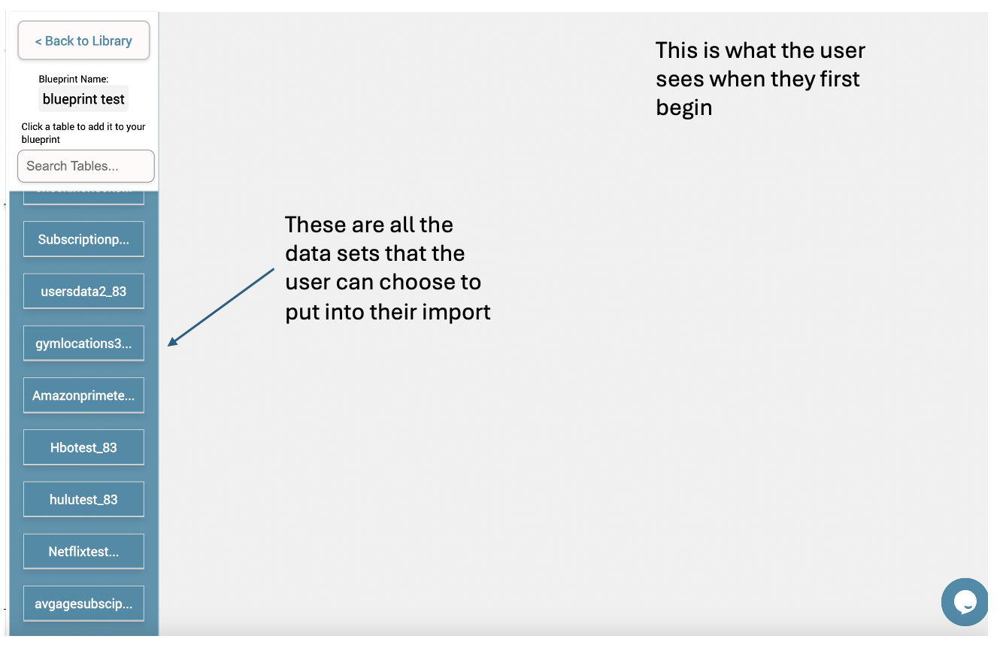
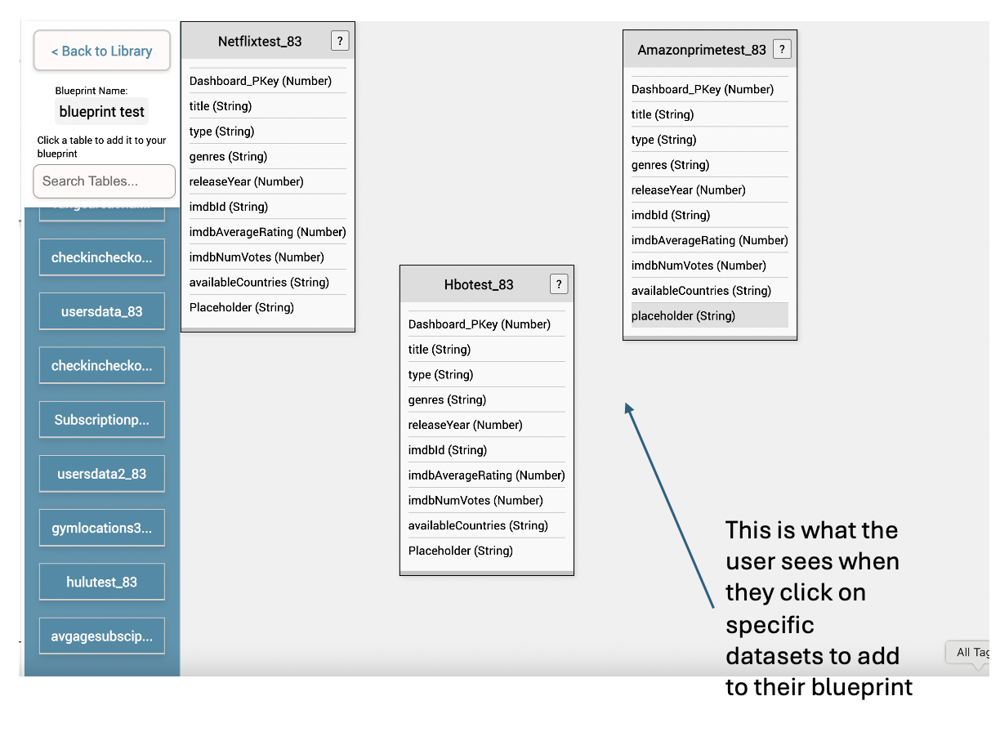
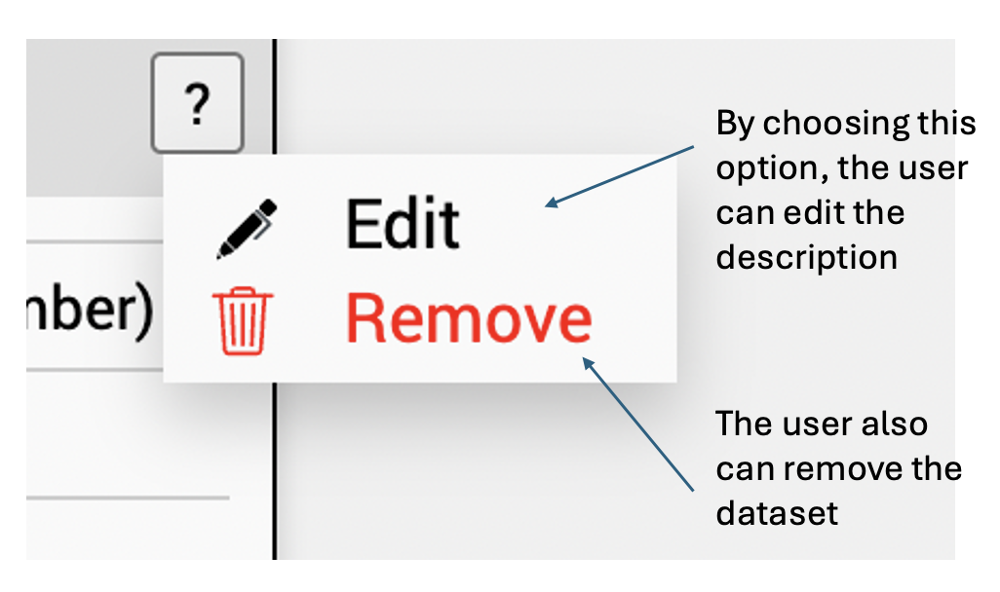
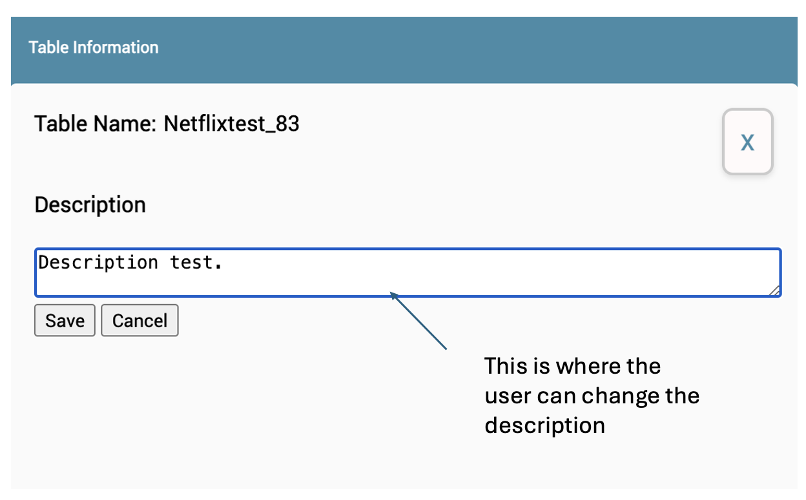
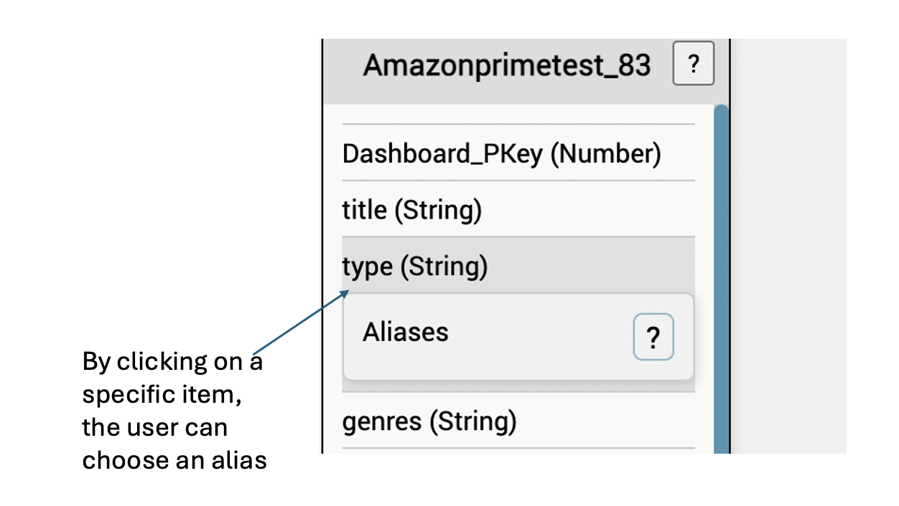
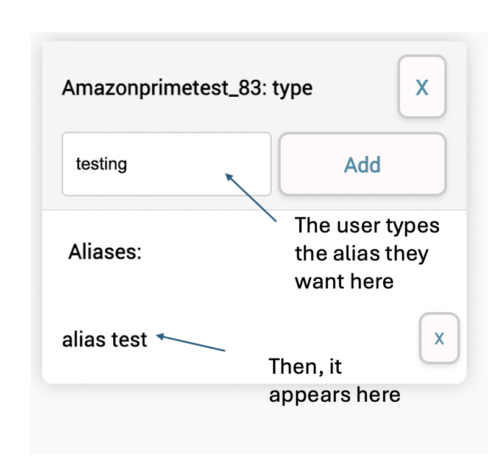
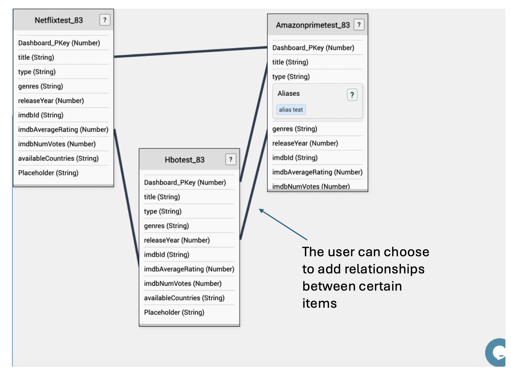
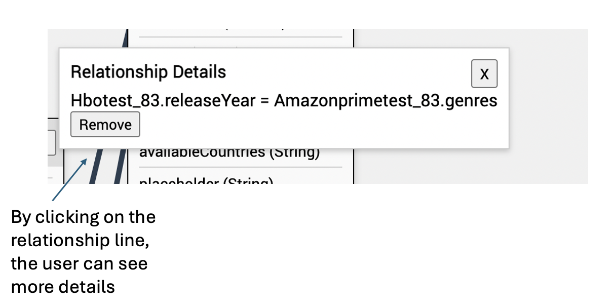

Blueprints Overview
Blueprints allow users to structure and manage datasets by defining relationships, modifying attributes, and organizing data models. This section outlines key actions available within Blueprints.
1. Initial View of Blueprints
When users open the Blueprints section, they see a list of available datasets. These datasets can be selected and added to the blueprint for further structuring.
2. Selecting Datasets
Users can click on a dataset from the left panel to add it to their blueprint. The dataset appears with its columns and data types displayed, allowing users to organize multiple datasets in one view.
3. Editing and Removing Datasets
After adding datasets, users can either edit their descriptions for better clarity or remove them from the blueprint if they are not needed.
4. Updating Dataset Descriptions
Clicking the edit option allows users to modify dataset descriptions. This feature is useful for adding context or notes regarding the dataset's purpose.
5. Assigning Aliases
Users can rename specific fields by assigning an alias. This is useful for making column names clearer and easier to understand when working with queries.
6. Defining Relationships Between Datasets
Blueprints support relationships between datasets. Users can define connections between specific fields, similar to foreign keys in databases, to establish meaningful data links.
7. Viewing Relationship Details
By clicking on a relationship line, users can review the linked fields and confirm the connection details.
8. Removing Relationships
If a relationship is no longer needed, users can remove it by selecting the delete option. This action will unlink the datasets while keeping them available for other connections.